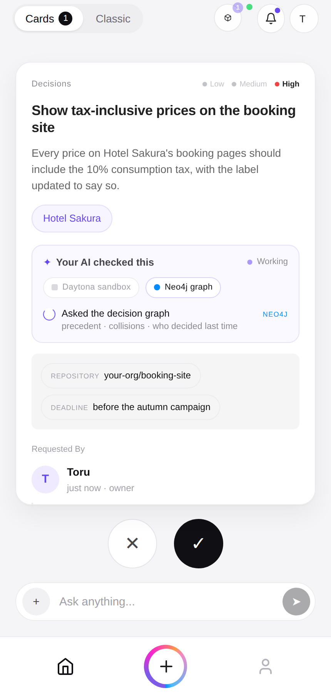
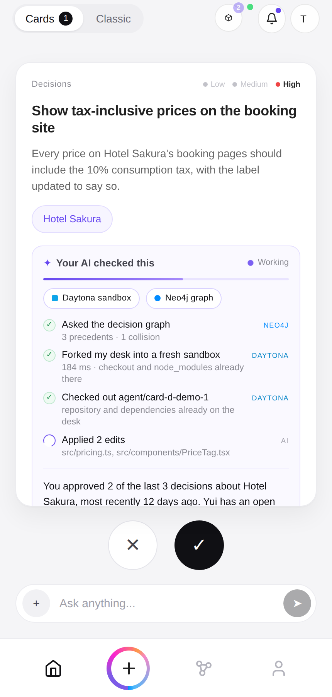
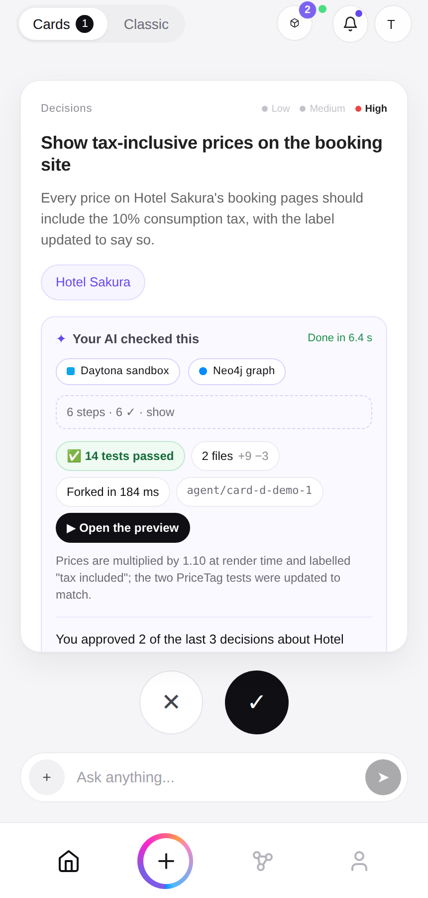
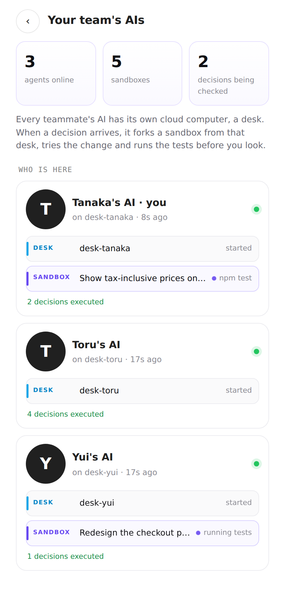
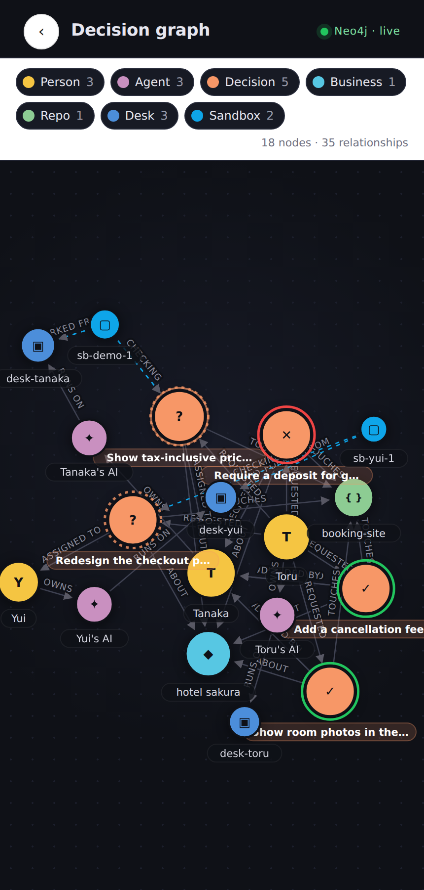
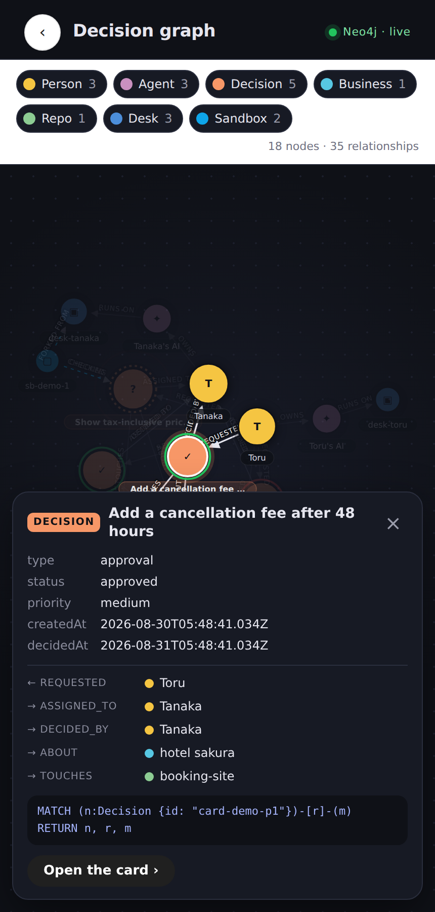

An AI-native communication OS
for you, your AI agents, and your team.
Approve it, and it's already done.
Work now happens between people and their AI agents.
An agent can't sit in a channel. A decision can't be swiped.
Nothing that gets approved starts moving on its own.
We should work AI-native: you talk only to your own AI, the AIs work across the organization, and what reaches you is only what you need to decide.
tools opened before you can say yes.
Will it break anything? What did we decide last time? Whose work does it collide with? The answers live in GitHub, Slack and last month's notes, never on the request.
lost after you say yes.
Approval is where the work starts. Someone still writes the change, runs the tests, opens the PR. "Approved, not started" is the state most decisions sit in.
Teams of 3–10 people running several businesses and repositories feel both, every day.
Open the feed, and the decision you need to make is already there.



Before you open the card, your AI has already:
Swipe right, and the tested branch is pushed and the pull request opens.
Real run: 10 seconds from card to evidence. 12 tests. Preview served from the sandbox.
| Daytona | In the product | On screen |
|---|---|---|
Persistent sandbox per agent, desk-<user> | The agent's own machine. The runner itself is deployed into it. | Fleet: DESK · started |
createSnapshot / fork | One sandbox per decision, booted from the desk with checkout and dependencies in place. | "Booted a sandbox from my desk's snapshot · 2.5 s" |
executeCommand, fs.uploadFile | Apply the model's edits, run the tests, read the diff. | "Applied 1 edit · 12 passed" |
getSignedPreviewUrl | The changed app, served from the sandbox, one tap away. | ▶ Open the preview |
| Labels, auto-stop, auto-delete | Approve pushes from the same sandbox, then deletes it. Abandoned ones expire. | Fleet counts, graph Sandbox nodes |
| Another persistent sandbox | Neo4j itself runs on Daytona behind its preview link. | graph-neo4j |



(:Person)-[:OWNS]->(:Agent)-[:RUNS_ON]->(:Desk)
(:Sandbox)-[:FORKED_FROM]->(:Desk)
(:Sandbox)-[:CHECKED]->(:Decision)
(:Person)-[:REQUESTED]->(:Decision)-[:ASSIGNED_TO]->(:Person)
(:Decision)-[:DECIDED_BY {action, at}]->(:Person)
(:Decision)-[:ABOUT]->(:Business)
(:Decision)-[:TOUCHES]->(:Repo)-[:PRODUCED]->(:PR)
// per card, in milliseconds
precedent: same business, decided, newest first
collision: same repo, still open, and who holds it
"Show tax-inclusive prices on the booking site."
Roles and approval authority send it to Tanaka.
Neo4j precedent, collisions
Daytona sandbox, edit, test, preview
One look at the evidence.
From the same sandbox. Graph updated. Toru gets a card back.
The relay lets only a card's recipient update it. The agent joins as the recipient, over the same AG-UI protocol the feed clients speak, so it can enrich that person's cards and nobody else's. Relay and clients unchanged; the agent lives on its Daytona desk.
Add ?demo for the scripted walkthrough, no backend needed.
Working today: feed · routing · real-time relay · GitHub sync · evidence panel · decision graph · fleet screen · agent with desk, snapshot sandboxes, edits, tests, preview, push, PR · Neo4j seeding, queries and live graph.
Next: blast radius of an approval · several sandboxes trying alternatives in parallel · dry-runs for non-code decisions · graph-informed routing.
github.com/Torutesu/Tiktokforwork